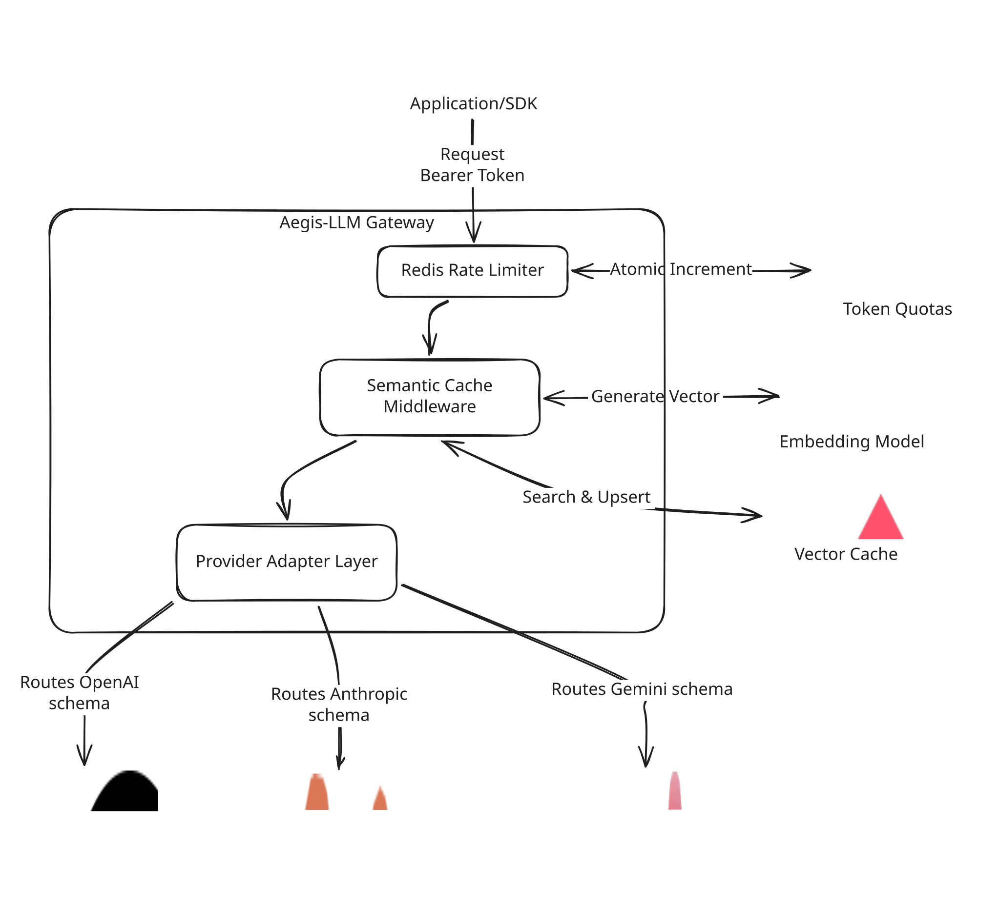

Aegis-LLM Gateway
Aegis-LLM is an LLM gateway for teams that want lower latency and lower API spend without changing client integrations. It fronts upstream /v1/* calls, enforces Redis-backed rate limits, and serves semantically cached responses from Qdrant when possible.
It is designed for three outcomes:
- Fast local setup for developers
- Clear understanding of internals for maintainers
- Predictable production deployment and operations
Key Features
- Drop-in Compatibility: Native routing support for standard
/v1/*OpenAI-compatible API calls. - Zero-Latency SSE Cache: Intercepts, chunks, and replays Server-Sent Events to preserve the real-time LLM typing effect during cache hits.
- High-Throughput Ingestion: Time-and-size bounded background worker pools execute gRPC batch upserts to Qdrant without blocking user responses.
- Precision Matching: Combines semantic vector search (via Ollama) with strict model-aware and prompt-hash-aware validation.
- O(1) Token Bucket Rate Limiting: Atomic Redis Lua scripts ensure memory-efficient, burst-smoothed API quotas.
- Privacy-First Security: Bearer tokens are SHA-256 hashed before entering Redis memory or application logs.
- Automated Cache Lifecycle: TTL-based expiration with periodic background cleanup and automatic payload indexing.
- Enterprise Observability: Native OpenTelemetry (OTel) instrumentation for traces and metrics (
stdoutor OTLP). - Resilient Infrastructure: Hardened HTTP proxy timeouts, fail-open database degradation, and graceful connection draining on shutdown.
Table of Contents
- Tech Stack
- Prerequisites
- Getting Started
- 1. Clone the Repository
- 2. Install Dependencies
- 3. Start Local Infrastructure
- 4. Environment Setup
- 5. Run the Gateway
- 6. Verify End-to-End
- Architecture
- Directory Structure
- Request Lifecycle
- Data Flow
- Component Deep Dive
- Environment Variables
- Upstream Auth
- Optional Core and Infrastructure
- Rate Limiting
- Embeddings
- Cache and Qdrant
- Telemetry
- Recommended Production Values
- Available Scripts
- Testing
- Deployment
- Docker (Recommended)
- Kubernetes Guidance
- Operational Runbook
- Troubleshooting
- Contributing
- License
Tech Stack
- Language: Go 1.25+ (module), Docker build stage uses Go 1.26
- Gateway HTTP:
net/http,httputil.ReverseProxy - Vector Cache: Qdrant via
github.com/qdrant/go-client - Embeddings: Ollama embeddings API
- Rate Limiting: Redis via
github.com/redis/go-redis/v9 - Observability: OpenTelemetry SDK + OTLP/stdout exporters
- Containerization: Multi-stage Docker build (
Dockerfile)
Prerequisites
Minimum requirements:
- Go 1.25 or newer
- Docker (recommended for infra dependencies)
- Redis (default
6379) - Qdrant gRPC endpoint (default
6334) - Ollama embeddings endpoint (default
http://localhost:11434/api/embeddings) - Upstream provider API key (if your provider requires bearer auth)
Optional but helpful:
curlfor local API verification- OTLP collector if using
TELEMETRY_EXPORTER=otlp
Getting Started
1. Clone the Repository
git clone https://github.com/nunoferna/aegis-llm.git
cd aegis-llm
2. Install Dependencies
Download Go module dependencies:
go mod download
3. Start Local Infrastructure
If you already run Redis/Qdrant/Ollama locally, skip this section.
Start Redis:
docker run --name aegis-redis --rm -p 6379:6379 redis:7-alpine
Start Qdrant:
docker run --name aegis-qdrant --rm -p 6333:6333 -p 6334:6334 qdrant/qdrant:v1.13.2
Start Ollama (if needed):
ollama serve
Pull embedding model used by default:
ollama pull all-minilm
4. Environment Setup
This repository does not include .env.example yet. Create your own .env (or export variables in shell) using the template below:
cat > .env <<'EOF'
PORT=8080
# Upstream Auth (Configure the ones you intend to use)
OPENAI_API_KEY=your-openai-key
ANTHROPIC_API_KEY=your-anthropic-key
GEMINI_API_KEY=your-gemini-key
# Default Upstream (Used for local models like Ollama or vLLM)
UPSTREAM_BASE_URL=http://localhost:11434
# Infrastructure
QDRANT_HOST=localhost
QDRANT_PORT=6334
REDIS_HOST=localhost
REDIS_PORT=6379
# Rate limiting
RATE_LIMIT_MAX_REQUESTS=5
RATE_LIMIT_WINDOW=1m
# Embeddings
EMBEDDING_URL=http://localhost:11434/api/embeddings
EMBEDDING_MODEL=all-minilm
EMBEDDING_TIMEOUT=5s
# Cache
CACHE_SAVE_QUEUE_SIZE=1024
CACHE_SAVE_WORKERS=4
CACHE_SAVE_TIMEOUT=2s
CACHE_VECTOR_SIZE=
MAX_CACHEABLE_BODY_BYTES=1048576
MAX_CACHEABLE_RESPONSE_BYTES=1048576
CACHE_ENTRY_TTL=24h
CACHE_SEARCH_LIMIT=5
CACHE_CLEANUP_INTERVAL=15m
CACHE_CLEANUP_TIMEOUT=5s
CACHE_CLEANUP_ENABLED=true
CACHE_INDEX_PAYLOAD_FIELDS=true
# Telemetry
TELEMETRY_EXPORTER=stdout
OTEL_EXPORTER_OTLP_ENDPOINT=localhost:4317
OTEL_EXPORTER_OTLP_INSECURE=true
OTEL_METRIC_EXPORT_INTERVAL=10s
OTEL_TRACE_SAMPLE_RATIO=1.0
OTEL_SERVICE_NAME=aegis-llm-gateway
OTEL_SERVICE_VERSION=1.0.0
EOF
Load the file in your shell:
set -a
source .env
set +a
5. Run the Gateway
Run directly:
go run ./cmd/aegis
Or build then run:
go build -o aegis-gateway ./cmd/aegis
./aegis-gateway
Expected startup log (example):
🚦 Connected to Redis Rate Limiter
🧠 Connected to existing Qdrant collection: aegis_prompt_cache
🛡️ Aegis-LLM Gateway starting on port 8080...
6. Verify End-to-End
Send a non-streaming chat completion request:
curl -sS http://localhost:8080/v1/chat/completions \
-H "Content-Type: application/json" \
-H "Authorization: Bearer dev-user-token" \
-d '{
"model": "gpt-4.1-mini",
"stream": false,
"messages": [
{"role":"user","content":"Explain semantic caching in one paragraph."}
]
}'
On repeated prompt/model requests, you should see cache-hit logs in gateway output.
Architecture
Directory Structure
.
├── cmd/
│ └── aegis/
│ └── main.go # Entrypoint, wiring, graceful shutdown
├── internal/
│ ├── cache/
│ │ ├── embedder.go # Ollama embedding client
│ │ ├── middleware.go # Cache middleware around proxy
│ │ ├── qdrant.go # Qdrant client, workers, cleanup
│ ├── config/
│ │ ├── config.go # Env parsing and defaults
│ ├── providers/
│ │ ├── anthropic.go # Claude payload extraction
│ │ ├── gemini.go # Google payload extraction
│ │ ├── openai.go # OpenAI/Ollama payload extraction
│ │ └── provider.go # Interface and dynamic routing logic
│ ├── proxy/
│ │ ├── proxy.go # Reverse proxy and dynamic upstream routing
│ ├── ratelimit/
│ │ ├── ratelimit.go # Redis O(1) limiter middleware
│ └── telemetry/
│ └── telemetry.go # OTEL provider setup
├── deploy/
│ └── charts/
│ └── aegis-llm/ # Helm chart for Kubernetes deployment
├── docs/
│ └── assets/
│ └── architecture.png # Diagrams and visual assets
├── Dockerfile
├── go.mod
└── README.md
Request Lifecycle
- Request arrives at
/v1/*or/v1beta/* - Rate limiter:
- Validates
Authorization: Bearer ... - Computes SHA-256 hashed token key
- Atomically increments Redis Token Bucket
- Returns
401/429when needed - Cache middleware (for non-streaming chat-completions-style payloads):
- Reads request body (bounded by
MAX_CACHEABLE_BODY_BYTES) - Uses Provider Adapters to safely extract prompt and model (OpenAI, Anthropic, or Gemini)
- Fetches embedding from Ollama
- Searches Qdrant by vector, then applies model/hash/expiry logic
- Cache hit: returns cached JSON (replays SSE chunks for streams)
- Cache miss: Proxies to the dynamically detected upstream provider
- Successful response capture:
- Bounded by
MAX_CACHEABLE_RESPONSE_BYTES - Enqueued for async save to Qdrant
- Background maintenance:
- Cleanup worker removes expired entries at configured interval
- OTEL cleanup metrics are emitted
Data Flow

Client
│
▼
HTTP /v1/*
│
▼
Rate Limit (Redis)
│
▼
Cache Middleware
├── Embeddings (Ollama)
├── Vector Search (Qdrant)
└── Async Save Queue
│
▼
Reverse Proxy
│
▼
Upstream LLM API
Component Deep Dive
1) Configuration (internal/config)
- Centralized env parsing with defaults
- Uses typed parsers for safe fallback behavior.
- Loads dedicated API keys for different upstream providers (OPENAI_API_KEY, ANTHROPIC_API_KEY, GEMINI_API_KEY).
2) Provider Adapters (internal/providers)
- Implements the Strategy Pattern to eliminate protocol fragmentation.
- Dynamically detects the requested AI format based on the URL path.
- Safely extracts prompts from complex multimodal JSON arrays without breaking the proxy passthrough.
3) Proxy (internal/proxy)
- Acts as a Transparent Proxy rather than a brittle translation layer.
- Dynamically routes outbound traffic to official APIs (Anthropic, Google) or your default internal upstream (Ollama/vLLM).
- Injects the correct upstream API key header on the fly.
- Uses hardened transport settings (timeouts, connection pools).
4) Rate Limiter (internal/ratelimit)
- O(1) Token Bucket implementation.
- Redis Lua script makes increment + expiration atomic.
- Fails open if Redis errors occur (availability-first behavior).
5) Cache Middleware (internal/cache/middleware.go)
- Bypasses cache entirely for malformed payloads or uncacheable formats (e.g., image generation).
- Protects memory with strict body/response caps.
- Async save queue decouples user latency from vector DB storage latency.
6) Qdrant Client (internal/cache/qdrant.go)
- Auto-creates collection and payload indexes (expires_at_unix, model, prompt_hash).
- Bounded save worker pool performs async gRPC upserts.
- Background cleanup worker regularly sweeps expired TTL points.
7) Telemetry (internal/telemetry)
- Supports
stdoutandotlpexporters - Configurable trace sample ratio and metric export interval
- Resource attributes include service name and version
- Main handler is wrapped by
otelhttpinstrumentation
Environment Variables
Upstream Auth
| Variable | Description | Example |
|---|---|---|
OPENAI_API_KEY |
OpenAI provider API key injected by gateway | sk-... |
ANTHROPIC_API_KEY |
Anthropic provider API key injected by gateway | anthropic-... |
GEMINI_API_KEY |
Google Gemini provider API key injected by gateway | gemini-... |
Optional Core and Infrastructure
| Variable | Description | Default |
|---|---|---|
PORT |
HTTP listen port | 8080 |
UPSTREAM_BASE_URL |
Upstream base URL | http://localhost:11434 |
QDRANT_HOST |
Qdrant host | localhost |
QDRANT_PORT |
Qdrant gRPC port | 6334 |
REDIS_HOST |
Redis host | localhost |
REDIS_PORT |
Redis port | 6379 |
Rate Limiting
| Variable | Description | Default |
|---|---|---|
RATE_LIMIT_MAX_REQUESTS |
Max requests per token per window | 5 |
RATE_LIMIT_WINDOW |
Window duration (time.ParseDuration) |
1m |
Embeddings
| Variable | Description | Default |
|---|---|---|
EMBEDDING_URL |
Embedding endpoint URL | http://localhost:11434/api/embeddings |
MBEDDING_MODEL |
Embedding model name | all-minilm |
EMBEDDING_TIMEOUT |
Embedding HTTP timeout | 5s |
Cache and Qdrant
| Variable | Description | Default |
|---|---|---|
CACHE_SAVE_QUEUE_SIZE |
Async save queue size | 1024 |
CACHE_SAVE_WORKERS |
Number of save workers | 4 |
CACHE_SAVE_TIMEOUT |
Timeout per save operation | 2s |
CACHE_VECTOR_SIZE |
Vector size override (auto-detected if unset) | auto |
MAX_CACHEABLE_BODY_BYTES |
Max request bytes handled by cache middleware | 1048576 |
MAX_CACHEABLE_RESPONSE_BYTES |
Max captured response bytes for cache saves | 1048576 |
CACHE_ENTRY_TTL |
Entry TTL | 24h |
CACHE_SEARCH_LIMIT |
Candidate count per vector query | 5 |
CACHE_CLEANUP_INTERVAL |
Cleanup worker tick interval | 15m |
CACHE_CLEANUP_TIMEOUT |
Cleanup run timeout | 5s |
CACHE_CLEANUP_ENABLED |
Enable background cleanup worker | true |
CACHE_INDEX_PAYLOAD_FIELDS |
Auto-create payload indexes on startup | true |
Telemetry
| Variable | Description | Default |
|---|---|---|
TELEMETRY_EXPORTER |
stdout or otlp |
stdout |
OTEL_EXPORTER_OTLP_ENDPOINT |
OTLP gRPC endpoint | localhost:4317 |
OTEL_EXPORTER_OTLP_INSECURE |
Use insecure OTLP transport | true |
OTEL_METRIC_EXPORT_INTERVAL |
Metrics export period | 10s |
OTEL_TRACE_SAMPLE_RATIO |
Ratio from 0.0 to 1.0 |
1.0 |
OTEL_SERVICE_NAME |
Service name for telemetry resource | aegis-llm-gateway |
OTEL_SERVICE_VERSION |
Service version for telemetry resource | 1.0.0 |
Recommended Production Values
Tune to workload and latency budget:
RATE_LIMIT_MAX_REQUESTS=120
RATE_LIMIT_WINDOW=1m
CACHE_SAVE_QUEUE_SIZE=8192
CACHE_SAVE_WORKERS=16
CACHE_SAVE_TIMEOUT=3s
CACHE_VECTOR_SIZE=1024
CACHE_ENTRY_TTL=12h
CACHE_SEARCH_LIMIT=8
CACHE_CLEANUP_ENABLED=true
CACHE_CLEANUP_INTERVAL=5m
CACHE_CLEANUP_TIMEOUT=10s
CACHE_INDEX_PAYLOAD_FIELDS=true
TELEMETRY_EXPORTER=otlp
OTEL_TRACE_SAMPLE_RATIO=0.2
OTEL_METRIC_EXPORT_INTERVAL=10s
Available Scripts
| Command | Description |
|---|---|
go run ./cmd/aegis |
Run gateway directly |
go build -o aegis-gateway ./cmd/aegis |
Build executable |
./aegis-gateway |
Run built binary |
go test ./... |
Run all tests |
go test -run TestLoad ./internal/config |
Run a specific test set |
go test -bench . ./internal/cache |
Run cache benchmarks |
go test -bench . ./internal/ratelimit |
Run rate-limit benchmarks |
go vet ./... |
Run static analysis |
gofmt -w ./... |
Format code |
docker build . -t aegis-llm:local |
Build container image |
docker run ... aegis-llm:local |
Run containerized gateway |
Testing
Run the full suite:
go test ./...
go vet ./...
Run package-focused checks:
go test ./internal/cache ./internal/config ./internal/proxy ./internal/ratelimit
Run benchmarks:
go test -bench . -benchmem ./internal/cache
go test -bench . -benchmem ./internal/ratelimit
Current test areas include:
- Config parsing defaults and fallback behavior
- Proxy URL validation and auth header injection
- Rate-limit hash and middleware behavior
- Cache enqueue + middleware benchmarks
Deployment
Docker
This repository already includes a multi-stage Dockerfile.
Build:
docker build . -t aegis-llm:local
Run:
docker run --rm -p 8080:8080 \
-e UPSTREAM_API_KEY="your-upstream-provider-key" \
-e UPSTREAM_BASE_URL="http://host.docker.internal:11434" \
-e QDRANT_HOST="host.docker.internal" \
-e QDRANT_PORT="6334" \
-e REDIS_HOST="host.docker.internal" \
-e REDIS_PORT="6379" \
-e OLLAMA_EMBEDDING_URL="http://host.docker.internal:11434/api/embeddings" \
-e TELEMETRY_EXPORTER="otlp" \
-e OTEL_EXPORTER_OTLP_ENDPOINT="host.docker.internal:4317" \
aegis-llm:local
Production deployment checklist:
- Pin image tag and digest
- Use secret manager for
UPSTREAM_API_KEY - Set CPU/memory limits for gateway and dependencies
- Ensure Redis persistence policy matches durability expectations
- Configure Qdrant storage and backups
- Set OTLP endpoint and verify traces/metrics ingestion
- Configure rolling deploy with readiness checks at infrastructure layer
Kubernetes (Helm)
The recommended approach for deploying Aegis-LLM to production is using the provided Helm chart. The chart utilizes Kustomize-style ConfigMap hashing to trigger zero-downtime rolling restarts automatically when you update your environment variables.
Navigate to the charts directory:
cd deploy/charts/aegis-llm
Create a values-prod.yaml file to override defaults:
replicaCount: 3
config:
RATE_LIMIT_MAX_REQUESTS: "500"
RATE_LIMIT_WINDOW: "1m"
CACHE_ENTRY_TTL: "12h"
CACHE_SAVE_WORKERS: "16"
CACHE_SAVE_QUEUE_SIZE: "8192"
TELEMETRY_EXPORTER: "otlp"
secrets:
create: true
openaiApiKey: "sk-..."
anthropicApiKey: "sk-ant-..."
geminiApiKey: "AIza..."
Install the chart to your cluster:
helm upgrade --install aegis-gateway . -f values-prod.yaml --namespace gateway-system --create-namespace
Operational Runbook
Monitor:
- Gateway request latency (overall and upstream)
- Cache hit ratio
- Rate-limit rejection volume
- Cleanup metrics:
aegis_cache_cleanup_runs_totalaegis_cache_cleanup_deleted_totalaegis_cache_cleanup_errors_totalaegis_cache_cleanup_duration_seconds
Tune when needed:
- High gateway memory:
- Lower
MAX_CACHEABLE_BODY_BYTES - Lower
MAX_CACHEABLE_RESPONSE_BYTES - Lower
CACHE_SAVE_QUEUE_SIZE - Slow cache writes:
- Increase
CACHE_SAVE_WORKERS - Increase
CACHE_SAVE_TIMEOUT - Too many cache misses:
- Confirm model consistency in requests
- Verify embedding endpoint/model correctness
- Increase
CACHE_SEARCH_LIMITcarefully - Expired entries not being reclaimed fast enough:
- Reduce
CACHE_CLEANUP_INTERVAL - Increase
CACHE_CLEANUP_TIMEOUT
Troubleshooting
Upstream auth not being injected
Symptom: Upstream returns unauthorized when using a provider that requires bearer auth.
Fix:
export UPSTREAM_API_KEY="your-upstream-provider-key"
401 Missing or invalid Authorization header
Cause: Client did not send Authorization: Bearer <token>.
Fix:
curl ... -H "Authorization: Bearer any-dev-token"
429 Too Many Requests
Cause: Token exceeded configured limit in current window.
Fix options:
- Increase
RATE_LIMIT_MAX_REQUESTS - Use a longer
RATE_LIMIT_WINDOW - Retry after
Retry-Afterseconds
Upstream provider unavailable (502)
Cause: Invalid UPSTREAM_BASE_URL, networking issue, or upstream outage.
Checks:
echo "$UPSTREAM_BASE_URL"
curl -I "$UPSTREAM_BASE_URL"
Cache misses on repeated prompts
Likely causes:
- Different
modelvalues across requests stream=truerequests bypass cache- Embedding endpoint/model mismatch
- TTL elapsed (
CACHE_ENTRY_TTL)
No telemetry in collector
Checks:
echo "$TELEMETRY_EXPORTER"
echo "$OTEL_EXPORTER_OTLP_ENDPOINT"
Set OTLP mode:
export TELEMETRY_EXPORTER=otlp
export OTEL_EXPORTER_OTLP_ENDPOINT=localhost:4317
export OTEL_EXPORTER_OTLP_INSECURE=true
Contributing
- Create a feature branch
- Make focused changes
- Run formatting and validation:
gofmt -w ./...
go test ./...
go vet ./...
- Open a PR with:
- clear summary
- configuration impact
- test evidence
License
This project is licensed under Apache License 2.0. See LICENSE.